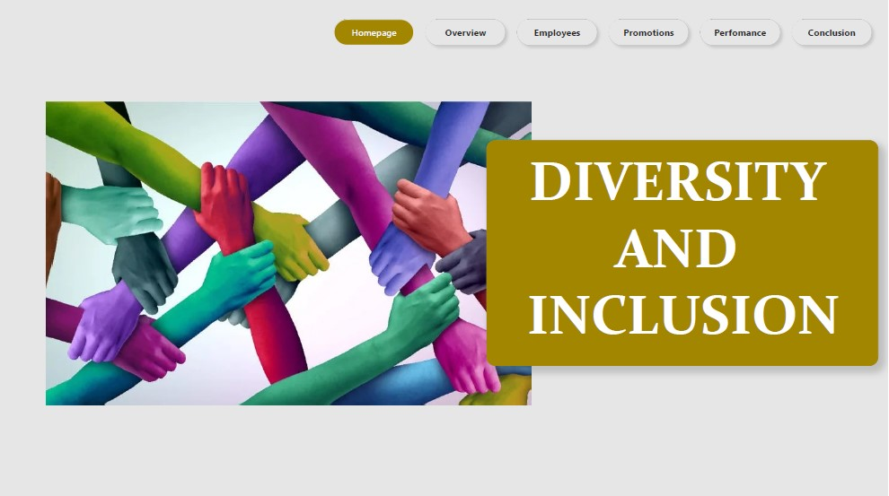
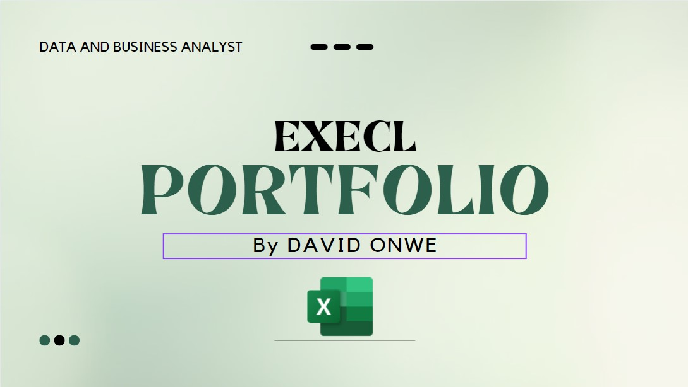
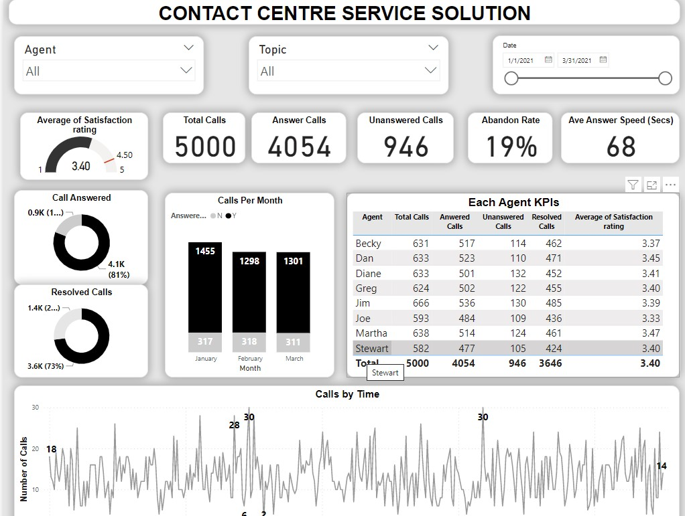
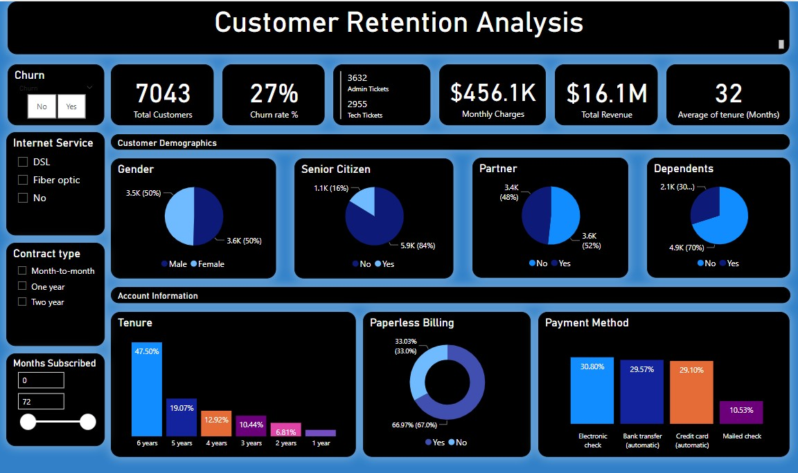

I employed Power BI for visualization and analysis, alongside Power Query for efficient data cleaning in my project
I researched and proposed inclusive promotion criteria, prioritizing performance, experience, and gender diversity.
This approach fosters motivation, loyalty, and a welcoming atmosphere while also being a smart business move. I'm keen to share more about my project—let's connect!


Using R programming and various libraries, data was loaded and cleaned, conducted exploratory analysis, and performed data visualization. The goal was to better understand customer segments, their purchasing behavior, and their impact on chip sales.

I analyzed COVID-19 data using SQL, focusing on cases, deaths, and vaccinations. Calculated percentages, identified high-risk countries, and tracked global trends. Leveraged CTEs and views for efficiency. Insights highlighted infection rates and vaccination progress, fueling my passion for impactful data analysis.

I've harnessed Excel and Power Query to transform raw data into actionable insights. Whether it's analyzing or dissecting sales trends, I've used these tools to clean, organize, and visualize data effectively. Dynamic dashboards provide real-time snapshots for informed decision-making. My goal is to turn data into powerful insights in the world of data science and beyond.

The Power BI dashboard's key stats cover customer satisfaction, call metrics like answered/abandoned, time-based call data, average speed of answering, and agent performance based on talk time and answered calls.

Defined KPIs, created a dashboard, and offered suggestions to improve it. Aligned KPIs with client goals and objectives, and emphasized the importance of data-driven metrics for retention strategy success. Excited to contribute to driving the client's business forward.